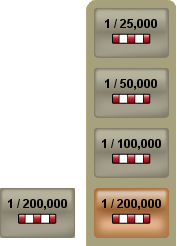
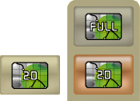
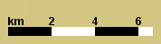

The toolbar is located in the lower part of the main window. It gives a quick access to the functionalities related to the Geographic Information System (GIS).
These functionalities are listed in the following table.
|
Button |
Function |
|---|---|
|
This button allows the Field Unit Operator to select:
|
|
|
This button allows the Field Unit Operator to fill fields using a virtual keyboard. |
|
|
This button allows an automatic return on the current GPS position after a map movement. |
|
|
These buttons allow zooming in or out on the map. |
|
|  |
This button allows selecting a map scale. Pressing this button displays the available scales. |
|  |
This button allows selecting two types of map display: 2D or Full Screen. For full screen display, all frames of functions or information are
hidden. Only the following function keys remain displayed in
transparency mode:
|
|  |
This scale is always displayed on the map. The scale unit automatically switches to kilometer or meter according to the zoom level. |